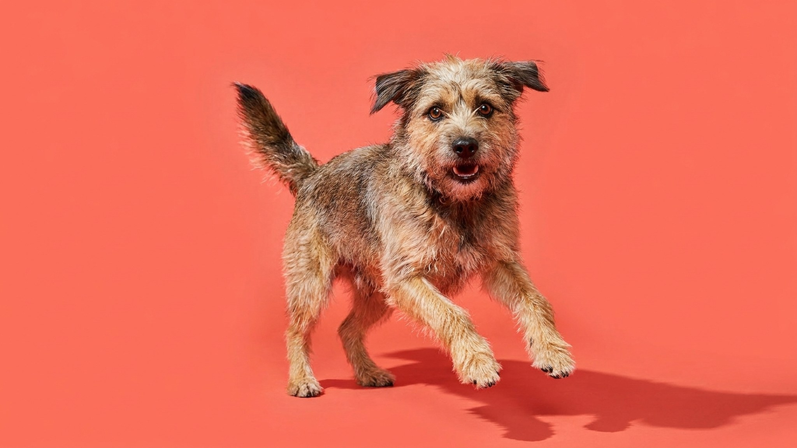

Характерный цокот когтей по паркету — сигнал, что пора действовать. Слишком длинные когти давят на подушечки лап при каждом шаге и постепенно меняют постановку лапы, что ведёт к дискомфорту в суставах. Ниже — как разобраться с живой частью, выбрать инструмент и провести стрижку дома так, чтобы собака не боялась следующего раза.
🐾 Заведите дневник ухода за собакой
Вес, шерсть, обработки, прививки — всё в одном месте. А если что-то смущает, AI-ветеринар ответит круглосуточно и бесплатно.
Завести дневник → Завести в MAX →
У вас iPhone? AnimaLife есть в App Store
Два ориентира: когти касаются пола, когда собака стоит — это уже длинно. Или видно, что коготь начинает загибаться в сторону. У собак, которые много ходят по асфальту, когти стираются сами и нуждаются в подрезке реже; у тех, кто гуляет по траве или ковру — быстрее.
Регулярность: в среднем раз в 3–4 недели, но ориентируйтесь на конкретную собаку. Лучше подрезать чуть-чуть чаще, чем запустить до момента, когда коготь мешает ходить.
Внутри когтя проходит пульпа — сосуды и нерв. Задеть её больно для собаки и сопровождается кровотечением. Главное правило: не торопиться и снимать понемногу.
Два основных варианта: когтерез-гильотина (одно лезвие) и секатор-ножницы (два лезвия). Оба работают хорошо при остром лезвии — тупой инструмент крошит коготь и давит на пульпу. Гриндер (электрическая пилка) шлифует без риска перерезать, но шум пугает часть собак.
Техника: держите лапу уверенно, но без силы. Режьте под небольшим углом к плоскости роста когтя. Делайте один небольшой срез, осмотрите — и только потом следующий. Угощайте собаку лакомством до, в процессе и после — не как награду за терпение, а как часть позитивной ассоциации с процедурой.
Удерживать собаку силой — путь к тому, что каждая следующая стрижка будет хуже предыдущей. Работает обратное: десенсибилизация. Сначала просто трогайте лапы в спокойной обстановке с лакомством, потом держите коготь в пальцах, потом касайтесь когтерезом без стрижки, потом стригите один коготь и делайте паузу. Растяните знакомство на несколько дней.
Если собака в панике при любом прикосновении к лапам — не торопитесь, работайте постепенно. Главная цель первого этапа: собака спокойно лежит рядом, пока вы держите инструмент. Всё остальное — потом.
Если вы задели пульпу и кровотечение не останавливается в течение 10–15 минут при лёгком сдавливании — покажите ветеринару. У некоторых собак с очень тёмными или толстыми когтями ориентиры плохо читаются даже при аккуратной работе: первые несколько раз имеет смысл попросить грумера сделать всё при вас и показать технику лично. Если собака реагирует агрессивно или приходит в сильное возбуждение — обсудите с ветеринаром план приучения: иногда нужна помощь зоопсихолога.
🐾 Чтобы уход не держать в голове
AnimaLife напомнит, когда стричь когти, вычёсывать, купать и обрабатывать от паразитов, и заведёт дневник по вашему питомцу. Бесплатно.
Настроить напоминания → Настроить в MAX →
У вас iPhone? AnimaLife есть в App Store
🐾 Понравился разбор?
Подпишитесь на канал — каждый день разбираем по одному тревожному симптому у кошек и собак: что в пределах нормы, а когда пора к врачу. Подпишитесь, чтобы не пропустить разбор, который может спасти здоровье вашего питомца.
Материал носит информационный характер и не заменяет очную консультацию ветеринара.